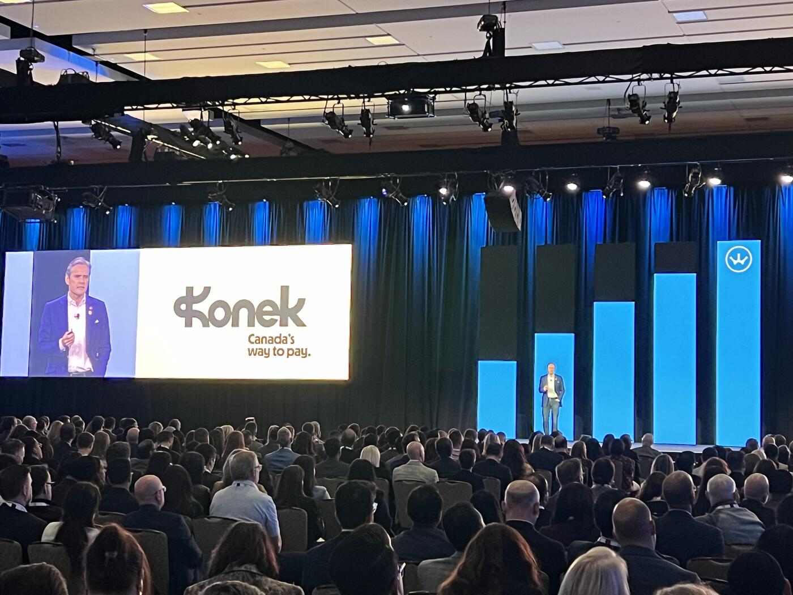
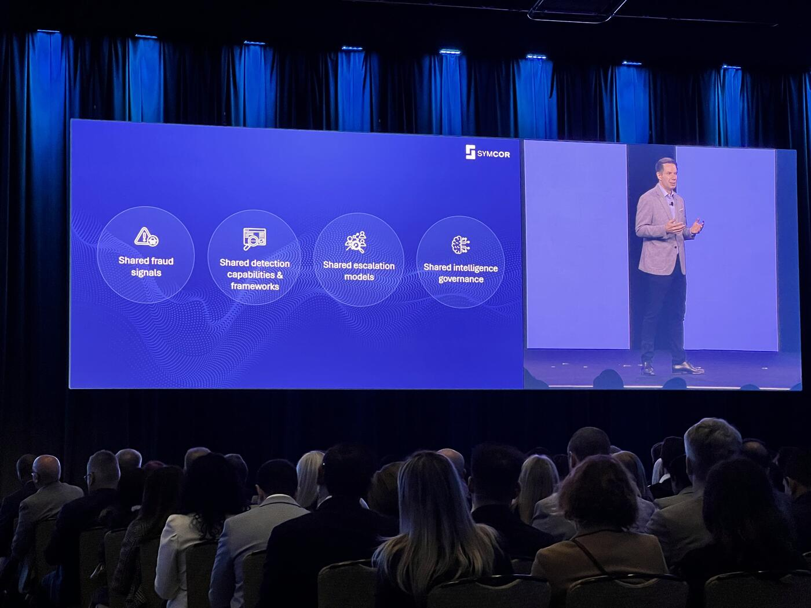

Editor's note on scope. The Payments Canada Summit 2026 ran across three days and many parallel tracks. This cover story is built from a curated selection of 23 sessions attended in person by our correspondent — chosen specifically because they sit on or near the AI and agentic-commerce thread of the conference. It is not a complete summit recap. It is the AI thread, reported densely, with every supporting session linked at the end.
When Tom Hewson of RedCompass Labs opened the Deep Dive Day of the 2026 Payments Canada Summit, he reached for a phrase that, by the end of the conference, would feel less like rhetoric and more like load-bearing strategy: "Payments are the machinery of civilization. They stitch together societies and economies."
The line landed because the sessions we attended — spread across three days, two main stages, and a dedicated AI Deep Dive — kept returning to the same uncomfortable question: at what point does the complexity of moving money outrun the institutions that move it? And at what point does it require AI systems we can't fully explain to do work we can't afford to get wrong?
If 2025 was the year the Canadian payments industry started talking about agentic commerce, 2026 was the year it started building for it. The shift was visible in everything from Interac CEO Jeremy Wilmot's "One Network" keynote, to Visa's "Agentic Ready" program, to Mastercard's quiet announcement of 30 new roles at the Toronto Foundry, to Minister of Finance François-Philippe Champagne's confirmation that stablecoin regulation is coming and crypto ATMs are being banned. The deeper signal was cultural: the industry, in the words of Neo Financial's Timothy Morris, "is taking an offensive mindset for the first time in a long time."
This cover story pulls together the AI and agentic threads running through the 23 sessions we covered — keynotes, fireside chats, panels, and the dedicated AI Deep Dive day. It is, deliberately, the long version. For the deep dives, every section links to the corresponding Financial Technology Frontier session report. Other tracks of the summit — covering operations, settlement mechanics, consumer protection, and regulatory plumbing not directly tied to AI — fall outside this report's scope and will be covered separately.
1. The Cultural Reset: A Country (Briefly) on Offense

The summit opened with a keynote from Jeremy Wilmot, President & CEO of Interac Corp., that was less a product pitch than a sovereignty argument. "All of these fees leave Canada altogether," he told the room. "Every transaction processed in the country generates information of what Canadians buy, how much they pay, when they bought it, and from who. And right now, a lot of that data travels out of the country."
Wilmot's prescription — Canadian rails, Canadian rules, Canadian data — was matched by a striking on-stage statistic: account-to-account request-to-pay on e-Transfer grew 81% year-over-year in 2025, evidence that businesses are voting with their behaviour even before the Real-Time Rail goes live. He warned that the policy momentum of the previous six months "has dissipated a bit" and "needs to be sustained." Read the full keynote report →
Two days later, Minister Champagne answered Wilmot more directly than any vendor pitch could have. In his closing fireside, he announced a new Financial Crime Agency ("our own version of a serious fraud office for money laundering"), confirmed a crypto ATM ban, signalled that stablecoin regulation is imminent, and framed the federal Real-Time Rail as "a cornerstone of our modernization agenda." His three-word doctrine — "ambition, confidence, vision" — was delivered with the energy of a minister who understands that Canada now has, in the IMF's words, the fiscal headroom of a triple-A G7 economy to invest in payments modernization. Champagne fireside report →
In between those bookends, the change of posture was unmistakable. Timothy Morris (Neo Financial) described it as the first time in years the industry has been "taking an offensive mindset" rather than a defensive one. Daljit Singh of EQ Bank pointed to a three-month regulatory approval — "the fastest approval in the last 20 years" — as evidence the regulator is, at last, moving at fintech speed. Banking in Disguise panel →
That posture matters because, as multiple speakers stressed, the offensive window will not be open forever. Adriana Vega of Fintechs Canada captured the room's quiet anxiety: "We have a tendency to eliminate risk completely rather than to embrace a certain level of managed risk." Canada's habitual reflex toward total risk elimination is no longer a feature; it has become a brake on the very innovation the federal government is trying to ignite. Unlocking the Strategic Value of Payments →
2. Agentic Commerce Goes From Theory to Operational Reality

The most consistent message across the summit — repeated in different vocabularies by Microsoft, Stripe, Visa, Mastercard, BMO, CIBC, Citi, J.P. Morgan, Capco, and SWIFT — was that agentic commerce is no longer speculative. It is happening. It is just messier than the keynotes of 2024 implied.
Dan Iwachiw, VP & Head of Canada Product, Visa Canada, framed the inflection precisely: "The table is set, the ingredients are on the table, but we haven't fully dug in yet." He shared the data behind that judgment: over 50% of consumers already use AI for shopping research, and the AI-to-agent ecosystem is converging around an "alphabet soup" of new machine-native protocols — ACP, UCP, AP2, x402. The bet Visa is making: don't pick a winner. Intelligent Commerce Connect is being positioned as "an agnostic on-ramp" to whichever standards survive. His near-term forecast: "Everybody in this room will make some form of an agentic transaction within the next year." Visa session →
On the operations side, Aakash Sahney of Stripe delivered the most concrete signal of velocity at the summit: traffic from LLMs to Stripe's developer documentation has increased 7–10x in the past six months. Agents are not just hypothetical participants in commerce; they are already reading the manuals. Stripe's new payments foundation model was trained on the company's roughly $2 trillion in global volume, and 75% of Stripe's surveyed platforms believe fraud is advancing faster than they can keep up with. Agentic AI in Payments →
Tyler Pichach of Microsoft, on the same panel, gave the agentic future its sharpest enterprise framing: "collapsing the funnel." Discovery, onboarding, credit issuance, and wallet provisioning compressed into a single Copilot-style conversation. Daniela Hawkins of Capco stress-tested it from the dispute side: "Now my agent went out and bought my sneakers, and I didn't receive them. Or maybe I just don't have great intent, and I call my bank and I say, 'I need to dispute this charge.'" If the bank can't reconstruct who authorized what — agent, user, or both — the entire trust stack collapses.
The room was visibly humbled by the cold-pressed juice anecdote shared by David Tax of TD Bank Group on the Economies of Machines panel (moderated by Michelle Beyo of Finavator, with Aviva Klein, Nate Soffio of Prove, and Mike Ward of Mica): a banking executive told her assistant to buy "a case of cold-pressed juice" and 10 cases showed up at her door. "The challenges are not theoretical. The challenges are real." Economies of Machines panel →
Mohneet Gujral of Citi pushed the same point from a different angle: "Agentic e-commerce is a big wave of change and not everybody is ready for it." She predicted a re-emergence of wallet providers as the central infrastructure layer for agent-to-agent transactions. Deploying AI in Payments →
And Dougal Middleton of J.P. Morgan put a number on the prize: "We expect it to be two to five trillion dollars in payment volume by 2030." Strategic Value panel →
The honest counterweight came from Iwachiw himself: "Autonomy is coming, but it will arrive more slowly than the headlines suggested." And from Aviva Klein on the Economies of Machines panel: today's real-world adoption is concentrated in the procure-to-pay cycle, not in fully autonomous consumer transactions.
3. The Identity-Shaped Hole

If you took only one technical message from the summit, it would be this: every emerging agentic protocol has an identity-shaped hole at its center.
The phrase belongs to Nate Soffio of Prove, an identity and standards contributor on the Economies of Machines panel: "They all kind of have an identity-shaped hole." His follow-up was even more pointed: "How do we cryptographically bind an identity to a specific agent or agent runtime or a specific task or a specific chain of events? Everyone's got to authenticate with everyone else. It's just a big authentication party."
Holger Kormann, President & CEO of Symcor, gave the identity problem its economic weight. Last year, the Canadian Anti-Fraud Centre received more than 112,000 reports of fraud involving more than $704 million in losses — up 10% YoY — and those numbers represent a fraction of the real total. His vivid warning: "Nine million Canadians are still giving their banking passwords to apps." His thesis: "Identity is the new safety parameter. It is the last and best moment in time to stop fraud before the money moves." Outsmarting the Fraud Factories →
The identity gap is not academic. Al-Karim Kara of the Land Title & Survey Authority of British Columbia demonstrated what it looks like in the wild. BC alone represents ~$75B of Canada's ~$300B annual real property market. LTSA has digitized 99% of core registrations and 70% of residential transactions — yet money, authority, and registration still aren't synchronized at closing. He renamed the workflow what it actually is: a "friction chain," not a value chain. Converging Forces →
John Filby, CEO of Outseer, sharpened the distinction the industry now lives inside: the technical attack surface vs. the emotional attack surface. Account takeover answers "is it a genuine user?" Scams answer "is it a genuine transaction?" The user is legitimate, the credentials are valid, the transaction is authorized — and the manipulation happens outside the system. Detection systems built around identity don't yet understand intent. Leading with AI in Fraud →
That gap is exactly where agentic identity — sometimes shorthanded as KYA (Know Your Agent) — is becoming the missing layer. Multiple speakers across the summit, from David Tax (TD Bank Group) on the Economies of Machines panel to Mohneet Gujral on the Deploying AI panel, suggested that wallet providers, payment networks, and identity directories may converge into the trust anchor for machine-initiated transactions.
4. Fraud Has Industrialized — and It's Beating Defenders With AI

The most uncomfortable consensus of the summit was this: the attackers are ahead.
Matt Loos of Scotiabank said it plainly on the Deploying AI in Payments panel: "The reality is all the fraudsters are using AI. They're probably 20 steps ahead of us on AI." Vicky Wang of SWIFT added the obvious corollary: "They collaborate. That's a free-for-all."
The defensive response is converging on three ideas:
One: shared intelligence. Andy Renshaw, SVP Product Management at Feedzai, quantified it on the Risk-Resiliency panel (moderated by Lisa Ford, CLPO of Payments Canada, and seated alongside Anne Butler of the Bank of Canada, Judith Hamel of Finance Canada, and Paulo Barbosa of Banfico): AI alone delivers a 25–35% lift in financial crime prevention, but shifting from institutional to network-level intelligence adds another ~50%. He pointed to the UK's Confirmation of Payee, Singapore's centralized scam aggregation, Brazil's rapid adaptation, the Netherlands' data pooling, and Australia's cross-domain signals (telco + social + payments) as live experiments. Kormann's framing of this was the most evocative of the summit: a "shared brain" trained on cross-institutional intelligence. "If we train it together on our shared cross-institutional intelligence, imagine how powerful it becomes." Risk-Resiliency panel →
Two: AI as defender. Stripe's payments foundation model is one of the most concrete examples of this — a model trained on roughly $2T in transaction data is starting to identify fraud signatures no human team could surface. Pichach's challenge to the room — "How many of you are using LLMs directly inside your fraud systems?" — produced a thin show of hands. Aakash Sahney's verdict: "That's telling."
Three: real-time governance. Kayal Palani, in the Enabling AI Innovation fireside, made the point that on real-time rails, "decisions require real-time policies, real-time governance." Retrospective audit dies the moment money moves in milliseconds. His architectural principle is one of the most quotable lines of the summit: probabilistic systems underneath, deterministic controls on top. Enabling AI Innovation fireside →
The cross-border dimension is what worries the regulators most. Wang and her colleagues at SWIFT spent two years clearing legal review across nine separate jurisdictions for a single cross-border fraud-detection initiative — and the methodology itself is so sensitive that exposing it would render it useless within days. Champagne's announcement of a new Canadian Financial Crime Agency sits squarely in that gap. "For me, it's economic security, but it also transcends national security."
5. Banks Are Redesigning the Engine While Flying

The bank executives at the summit were unusually candid about what AI adoption actually looks like inside large institutions.
Pallavi Tripathi of CIBC offered the analogy of the summit: large banks are "redesigning the engine while mid-flight." The contrast between fintech agility and enterprise banking is not about willingness; it's about thousands of interconnected systems, regulatory obligations, and resiliency expectations that fintechs simply don't carry. Her sharper distinction: adding AI tools is "a new GPS in your car" — the real ambition is to "build an autonomous self-driving vehicle." From Manual to Measurable →
Sladjana Jovanovic of BMO disclosed the scale of the bet: BMO's publicly announced $1B AI investment sits on top of two years of foundational copilots, training, and use-case experimentation. BMO's internal chatbot is connected to ~8,000 policy documents and has handled ~1 million questions. Her measurement philosophy was direct: "Unless you measure it, unless you set targets, it's not happening."
Keith Ajmani, also on the From Manual to Measurable panel, delivered the most actionable engineering principle of the conference: "You don't start by generating code. You start by generating specifications." And, with a smile that wasn't really a joke: "I don't need a model that understands all of Shakespeare's plays ever published to refactor an application." Translation: the industry's near-term ROI lies in smaller, governable, domain-specific models — not the megaphone of general-purpose intelligence.
The most operational AI win disclosed at the summit came from Matt Loos at Scotiabank, in partnership with Microsoft and UiPath: a payment-repair POC built on three agents. One cleaned transaction data. One interpreted repair reasons from procedural documentation. One generated the final report. A workflow that previously took ~18 hours per client report was compressed dramatically — and the middle agent surfaced a new repair-reason classification that humans had missed. "That's where it starts thinking."
Mohneet Gujral at Citi quantified the global build: Citi Payment Express is live in 20+ countries; Citi Agent Assist is live in 72+ countries. AI is being used to ingest Real-Time Rail regulatory documents and map them against existing global infrastructure for readiness gap analysis — a task she described as "genuinely surprising in terms of impact and speed."
The deeper warning, however, came from David on the agentic-finance panel: "AI is the easy part. The real challenge lies in building the systems around it." Followed by: "We're not ready for the volume and speed with which things are going to go."
6. Governance Is Now the Bottleneck — and the Differentiator

Sixty to seventy percent of enterprise AI initiatives fail because of governance, risk, or data, not technology. That statistic, surfaced by moderator Kellie Johnson on the Deploying AI panel, framed what may be the most consequential cluster of conversations at the summit.
The frameworks varied; the conclusion didn't:
-
Vicky Wang (SWIFT): "Governance for AI is like the brakes on race cars. On the surface, it's to slow you down — but it slows you down where you have to slow down or else you'll flip over. Ultimately, it enables you to go fast." SWIFT's approach is to pre-decide deployment patterns by data classification so that every new use case doesn't relitigate first principles.
-
Mohneet Gujral (Citi): "My neck is always on the line, no matter how much AI can help me." Citi's AI risk management is folded directly into enterprise risk management — and governance does not end at deployment. Continuous post-deployment monitoring is treated as a first-class operational requirement.
-
Matt Loos (Scotiabank): "We're bankers with a risk-first mindset. If you're not thinking about what's the worst-case scenario, you've already failed." Scotiabank has stood up centralized AI governance to prevent duplication across business units — "This group's doing AI over here. This group's doing AI over here. They're not talking to each other."
-
Kayal Palani (fireside): Don't start with tools. Start with three governance questions — what can agents do, what must they escalate, what must humans always own — and "take down your pen and paper."
The federal lens came from Alexandra Dostal of ISED Canada, who described Canada's governance philosophy in one of the more quotable lines of the week: "Trust is not a barrier to innovation. It's really what we need to have innovation scale." She cited two bills before Parliament — C-16 (synthetic intimate-image protections) and C-25 (election-deepfake offenses) — as evidence the government is focusing AI legislation on its highest-harm uses, while leaving room for industry-led standards everywhere else. ISED Canada remarks →
Dostal's national AI strategy, drawn from 11,000+ public submissions (a department record), spans six pillars: protecting Canadians and democracy; empowering Canadians; accelerating SMB and public-sector adoption; building sovereign compute at scale ($2B already committed); scaling Canadian AI companies through procurement; and trusted international partnerships. Her quote of the Minister of Artificial Intelligence and Digital Innovation deserves to be hung in every CIO's office: "Sovereignty is not solitude."
7. Tokenization, Stablecoins, and the Programmable-Money Stack
While the AI threads dominated the summit's attention, the parallel infrastructure conversation — tokenization, tokenized deposits, and stablecoins — became increasingly indistinguishable from it.
Jana Mackintosh, Managing Director of Payments & Innovation at UK Finance, in keynote conversation with Shawn Van Raay, Chief Technology and Operations Officer (CTOO) of Payments Canada, gave the cleanest definition of tokenized deposits the audience would hear all week: "Just commercial bank money with the DLT wrapper around it." After four years of exploration, UK Finance is now running live transactions with six to seven major banks to test fungibility across institutions. Her thesis — "we do truly believe in a multi-money ecosystem" — pushed back on the binary stablecoin-versus-deposit framing that dominates much of the discourse. Tokenized Deposits →
The stablecoin conversation was led by a notable Canadian cohort moderated by Eric Richmond, General Counsel & Head of Business Development at Shakepay (1.6M Canadian users): Sereena Boparai, CRO of Paramount Commerce (expecting to process $10B+ in 2026); Philppe Daoust, Managing Director of Venture Capital at NAventures (National Bank of Canada); and Jay Dorey, Head of Canada Government Affairs at Visa Canada. Dorey disclosed that Visa's stablecoin settlement is already a $7B run-rate business, primarily for cross-border flows. Boparai's framing of the strategic urgency was the panel's signature line: "I don't think there's really any losing from the adoption. I really just think the losing is falling behind." Daoust offered the sharpest strategic warning: the real risk is not whether stablecoins succeed in Canada, but which currency underpins them. Stablecoins panel →
Erin Elofson, President of Mastercard Canada, gave the cleanest articulation at the summit of why AI sits at the center of payments modernization, not adjacent to it: "Speed is now table stakes. Intelligence is the differentiator, and partnership is how it all scales." Her warning to the room: "Without intelligence, speed doesn't reduce risk. It simply supercharges it." In a real-time environment, she argued, "detection has to happen during the transaction, not after it" — and "risk management is becoming a real-time system capability, in no way a back-office function." Mastercard's hand on the rest of the stack: "We're very, very invested in stablecoin enablement and innovative money movement." The recent acquisition of PBSK is being positioned as on/off-ramp infrastructure for stablecoins. Her broader play in Canada includes a $510M cybersecurity investment, 280+ patents, ~500 employees contributing to global innovation, $11M+ in academic partnerships, and a quietly announced expansion of 30 new roles at the Mastercard Foundry in Toronto. Mastercard keynote → | Idea Exchange with Elofson →
The tokenization conversation, meanwhile, has quietly reframed itself. The Tokenization Isn't About Crypto panel — moderated by Manishi Varma (Partner, Business Consulting, Infosys) with Vivek Dwivedi (Regional Head, Infosys), Asad Joheb (AVP, Enterprise Payments, TD Bank Group), and Tom Pawelkiewicz (Vice President, Product, Mastercard) — made clear that tokens are no longer just secured card credentials. They are becoming programmable containers for trust, identity, permissions, compliance logic, and selective disclosure. Pawelkiewicz pointed to Mastercard's "insight token" as the working example: it allows merchants to use consumer preferences (sustainability, brand affinity, age range) without exposing the underlying personal data. The same panel issued the soberest warning of the week to one specific category of incumbent: if you operate a correspondent banking or clearinghouse business today, you should be preparing for meaningful disruption from token-native players like Circle and Coinbase. Tokenization →
8. The Real-Time Rail Is Coming — and It's the Foundation

Among the most consequential operational announcements of the summit: Canada's Real-Time Rail will enter industry testing in Q3, with launch targeted for Q4.
The delivery panel — Anuj Dhall (Interac), Jeff Holan (IBM Canada), and Rob M (CGI) — spoke about the rollout with the calm of operators rather than the cadence of marketers. Dhall's operational philosophy, in his own words: "We don't want you to know that anything's going on if we're doing our job well." The team has deployed 30+ observability and monitoring tools, separated the RTR and e-Transfer infrastructure as a risk mitigation measure, and is running the rollout as a wave — direct exchange participants first, then e-Transfer conversion participants. RTR delivery →
The geopolitical framing came from Dhall himself: RTR is "a national capability in a geopolitical moment." Champagne echoed the framing, calling RTR "a cornerstone of our modernization agenda."
What makes Canada's RTR launch unusual globally is the simultaneous conversion of a mature in-market system (e-Transfer) alongside the stand-up of a new clearing and settlement framework. Few countries have attempted both at once.
The strategic implication is one Naveen Sharma of Cognizant named directly in his keynote: don't run Real-Time Rail, open banking, and AI transformation as three separate programs. Doing so simply rebuilds the silo problem the next layer of integration will then have to solve. His framework — composability over integration, "forward-deployed engineers" embedded in business teams, and "context engineering" as the new enterprise moat — is one of the more under-appreciated frameworks of the week. The Builders of Tomorrow →
9. The Inversion: When Business Started Pushing AI and Tech Started Pumping the Brakes

One of the more striking observations of the summit came from moderator Oliver St Clair Stannard of RedCompass Labs on the From Manual to Measurable panel. The dynamic has inverted. A year ago, technologists were pushing AI adoption while business and governance teams were cautious. Today, executives and business leaders are aggressively demanding measurable AI outcomes — and technology teams are the ones applying caution because they own the operational reality.
That inversion has consequences. Sladjana Jovanovic at BMO noted that AI investment commitments are giving technology leaders the unusual leverage to modernize underlying infrastructure and processes that previously couldn't get executive attention. The B2B pressure cooker — employees using consumer AI tools outside the enterprise and expecting equivalent internal capabilities — is real. Discipline and standardization, in her view, are how banks scale through it.
The companion warning, from Matt Loos, is the one bank CFOs should be paying particular attention to: "AI is going to level the playing field very quickly." The differentiation that financial institutions have historically built around proprietary products and services is going to commoditize at a pace the industry has not seen before. The new moat, in Tripathi's framing, will be workflow redesign, governance maturity, context engineering, operational integration, and the ability to safely modernize legacy at scale.
The cultural counterweight came from John MacKinlay on the Converging Forces panel: "Historically, banks, the culture is risk management." It's not a bug, but in an agentic era it becomes a competitive liability — and the change has to be visible at the CEO level.
10. Mastercard's Quieter Story: Burnout, Honesty, and the Cost of the Pace

Buried in the middle of an otherwise standard fireside exchange between Mastercard Canada President Erin Elofson and Shawn Van Raay, Chief Technology and Operations Officer of Payments Canada, was one of the most candid moments of the entire summit. Asked what currently keeps her up at night, Elofson didn't reach for AI or stablecoins. She said:
"We're very lean. We have a lot of open jobs right now. And I'm worried about how exhausted my team is. We ask a lot of people. Everybody is doing more with less."
It's a line worth pausing on. The industry is staring at the most ambitious modernization cycle of the past two decades — RTR, open banking, stablecoins, agentic identity, AI governance — and the leaders running it are openly worried about whether their teams can carry the load. Innovation fatigue is a real systemic risk, and one that doesn't appear in any of the regulatory frameworks discussed at the summit. Idea Exchange with Elofson →
Her leadership rule for the moment — "real signals instead of noise" and a relentless focus on "where do we have the right to win?" — was echoed across the summit by Simona Salter at Scotiabank ("a few steps before customers are ready"), by Vega at Fintechs Canada (managed risk over total risk elimination), and by Vokey at Central 1 ("a rising tide lifts all boats").
11. The Canadian Window — and Why Peers Are Watching

The closing observation of the summit, made by multiple speakers, was that other countries are starting to envy Canada's position.
Adriana Vega at Fintechs Canada captured it best: "In my conversations that I have with our peers around the world, they're actually looking at us with a little bit of envy." Even countries that already implemented real-time payment systems are now saying: "I wish I knew what I know now and that I could do it all over again." Canada is entering RTR, open banking, agentic commerce, and AI governance late enough to benefit from other markets' mistakes and early enough to set its own standards.
That window is the whole story.
Wilmot's "energy that has dissipated a bit," Champagne's "ambition with confidence, with vision," Vega's call to overcome the risk-elimination reflex, Morris's "offensive mindset," Hewson's "qualified optimism," Salter's "it's not an either or, it's an and" — these are all variations on the same call. The infrastructure is being built. The protocols are being chosen. The first agentic transactions are happening today. Whether Canada arrives at this moment as a "lighthouse" (Champagne) or as a market that simply adopted what others built will depend on a small set of decisions made in 2026 — by banks, by regulators, by founders, and increasingly by the people governing the agents themselves.
If there is one line that should hang above this whole conversation, it is Tom Hewson's opener: payments are the machinery of civilization, and we are putting AI into the part of that machinery that matters most. Qualified optimism is not a slogan. It is, on present evidence, the only sustainable operating mode for the industry that emerged from the Payments Canada Summit 2026.